MAXimal
добавлено: 10 Jun 2008 17:57
редактировано: 23 Mar 2012 3:53
Содержание [скрыть]
Решето Эратосфена
Решето Эратосфена — это алгоритм, позволяющий найти все простые числа в отрезке 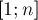 за 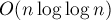 операций.
Идея проста — запишем ряд чисел  , и будем вычеркивать сначала все числа, делящиеся на
, и будем вычеркивать сначала все числа, делящиеся на  , кроме самого числа , затем деляющиеся на 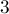, кроме самого числа , затем на 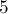, затем на 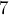, 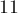, и все остальные простые до
, кроме самого числа , затем деляющиеся на 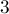, кроме самого числа , затем на 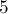, затем на 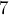, 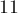, и все остальные простые до  .
.
Реализация
Сразу приведём реализацию алгоритма:
int n; vector<char> prime (n+1, true); prime[0] = prime[1] = false; for (int i=2; i<=n; ++i) if (prime[i]) if (i * 1ll * i <= n) for (int j=i*i; j<=n; j+=i) prime[j] = false;
Этот код сначала помечает все числа, кроме нуля и единицы, как простые, а затем начинает процесс отсеивания составных чисел. Для этого мы перебираем в цикле все числа от до , и, если текущее число  простое, то помечаем все числа, кратные ему, как составные.
простое, то помечаем все числа, кратные ему, как составные.
При этом мы начинаем идти от 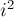, поскольку все меньшие числа, кратные , обязательно имеют простой делитель меньше , а значит, все они уже были отсеяны раньше. (Но поскольку легко может переполнить тип 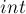, в коде перед вторым вложенным циклом делается дополнительная проверка с использованием типа 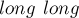.)
При такой реализации алгоритм потребляет 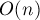 памяти (что очевидно) и выполняет действий (это доказывается в следующем разделе).
Асимптотика
Докажем, что асимптотика алгоритма равна .
Итак, для каждого простого 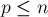 будет выполняться внутренний цикл, который совершит 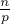 действий. Следовательно, нам нужно оценить следующую величину:
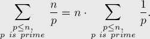
Вспомним здесь два известных факта: что число простых, меньше либо равных , приблизительно равно 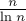, и что  -ое простое число приблизительно равно 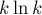 (это следует из первого утверждения). Тогда сумму можно записать таким образом:
-ое простое число приблизительно равно 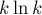 (это следует из первого утверждения). Тогда сумму можно записать таким образом:
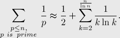
Здесь мы выделили первое простое из суммы, поскольку при  согласно приближению получится
согласно приближению получится  , что приведёт к делению на нуль.
, что приведёт к делению на нуль.
Теперь оценим такую сумму с помощью интеграла от той же функции по от до (мы можем производить такое приближение, поскольку, фактически, сумма относится к интегралу как его приближение по формуле прямоугольников):
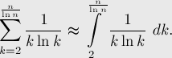
Первообразная для подынтегральной функции есть 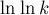. Выполняя подстановку и убирая члены меньшего порядка, получаем:
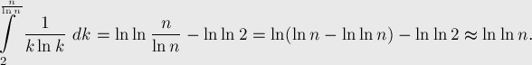
Теперь, возвращаясь к первоначальной сумме, получаем её приближённую оценку:
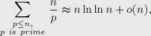
что и требовалось доказать.
Более строгое доказательство (и дающее более точную оценку с точностью до константных множителей) можно найти в книге Hardy и Wright "An Introduction to the Theory of Numbers" (стр. 349).
Различные оптимизации решета Эратосфена
Самый большой недостаток алгоритма — то, что он "гуляет" по памяти, постоянно выходя за пределы кэш-памяти, из-за чего константа, скрытая в , сравнительно велика.
Кроме того, для достаточно больших узким местом становится объём потребляемой памяти.
Ниже рассмотрены методы, позволяющие как уменьшить число выполняемых операций, так и значительно сократить потребление памяти.
Просеивание простыми до корня
Самый очевидный момент — что для того, чтобы найти все простые до , достаточно выполнить просеивание только простыми, не превосходящими корня из .
Таким образом, изменится внешний цикл алгоритма:
for (int i=2; i*i<=n; ++i)
На асимптотику такая оптимизация не влияет (действительно, повторив приведённое выше доказательство, мы получим оценку 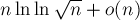, что, по свойствам логарифма, асимптотически есть то же самое), хотя число операций заметно уменьшится.
Решето только по нечётным числам
Поскольку все чётные числа, кроме , — составные, то можно вообще не обрабатывать никак чётные числа, а оперировать только нечётными числами.
Во-первых, это позволит вдвое сократить объём требуемой памяти. Во-вторых, это уменьшит число делаемых алгоритмом операций примерно вдвое.
Уменьшение объёма потребляемой памяти
Заметим, что алгоритм Эратосфена фактически оперирует с битами памяти. Следовательно, можно существенно сэкономить потребление памяти, храня не байт — переменных булевского типа, а бит, т.е. 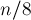 байт памяти.
Однако такой подход — "битовое сжатие" — существенно усложнит оперирование этими битами. Любое чтение или запись бита будут представлять из себя несколько арифметических операций, что в итоге приведёт к замедлению алгоритма.
Таким образом, этот подход оправдан, только если настолько большое, что байт памяти выделить уже нельзя. Сэкономив память (в 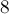 раз), мы заплатим за это существенным замедлением алгоритма.
В завершение стоит отметить, что в языке C++ уже реализованы контейнеры, автоматически осуществляющие битовое сжатие: vector<bool> и bitset<>. Впрочем, если скорость работы очень важна, то лучше реализовать битовое сжатие вручную, с помощью битовых операций — на сегодняшний день компиляторы всё же не в состоянии генерировать достаточно быстрый код.
Блочное решето
Из оптимизации "просеивание простыми до корня" следует, что нет необходимости хранить всё время весь массив 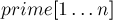. Для выполнения просеивания достаточно хранить только простые до корня из , т.е. 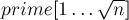, а остальную часть массива 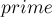 строить поблочно, храня в текущий момент времени только один блок.
Пусть  — константа, определяющая размер блока, тогда всего будет 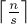 блоков, -ый блок (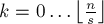) содержит числа в отрезке 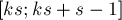. Будем обрабатывать блоки по очереди, т.е. для каждого -го блока будем перебирать все простые (от
— константа, определяющая размер блока, тогда всего будет 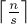 блоков, -ый блок (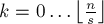) содержит числа в отрезке 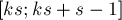. Будем обрабатывать блоки по очереди, т.е. для каждого -го блока будем перебирать все простые (от  до 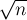) и выполнять ими просеивание только внутри текущего блока. Аккуратно стоит обрабатывать первый блок — во-первых, простые из 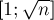 не должны удалить сами себя, а во-вторых, числа и должны особо помечаться как не простые. При обработке последнего блока также следует не забывать о том, что последнее нужное число не обязательно находится в конце блока.
до 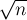) и выполнять ими просеивание только внутри текущего блока. Аккуратно стоит обрабатывать первый блок — во-первых, простые из 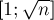 не должны удалить сами себя, а во-вторых, числа и должны особо помечаться как не простые. При обработке последнего блока также следует не забывать о том, что последнее нужное число не обязательно находится в конце блока.
Приведём реализацию блочного решета. Программа считывает число и находит количество простых от до :
const int SQRT_MAXN = 100000; // корень из максимального значения N const int S = 10000; bool nprime[SQRT_MAXN], bl[S]; int primes[SQRT_MAXN], cnt; int main() { int n; cin >> n; int nsqrt = (int) sqrt (n + .0); for (int i=2; i<=nsqrt; ++i) if (!nprime[i]) { primes[cnt++] = i; if (i * 1ll * i <= nsqrt) for (int j=i*i; j<=nsqrt; j+=i) nprime[j] = true; } int result = 0; for (int k=0, maxk=n/S; k<=maxk; ++k) { memset (bl, 0, sizeof bl); int start = k * S; for (int i=0; i<cnt; ++i) { int start_idx = (start + primes[i] - 1) / primes[i]; int j = max(start_idx,2) * primes[i] - start; for (; j<S; j+=primes[i]) bl[j] = true; } if (k == 0) bl[0] = bl[1] = true; for (int i=0; i<S && start+i<=n; ++i) if (!bl[i]) ++result; } cout << result; }
Асимптотика блочного решета такая же, как и обычного решета Эратосфена (если, конечно, размер блоков не будет совсем маленьким), зато объём используемой памяти сократится до 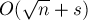 и уменьшится "блуждание" по памяти. Но, с другой стороны, для каждого блока для каждого простого из будет выполняться деление, что будет сильно сказываться при меньших размерах блока. Следовательно, при выборе константы необходимо соблюсти баланс.
Как показывают эксперименты, наилучшая скорость работы достигается, когда имеет значение приблизительно от 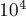 до 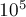.
Улучшение до линейного времени работы
Алгоритм Эратосфена можно преобразовать в другой алгоритм, который уже будет работать за линейное время — см. статью "Решето Эратосфена с линейным временем работы". (Впрочем, этот алгоритм имеет и недостатки.)